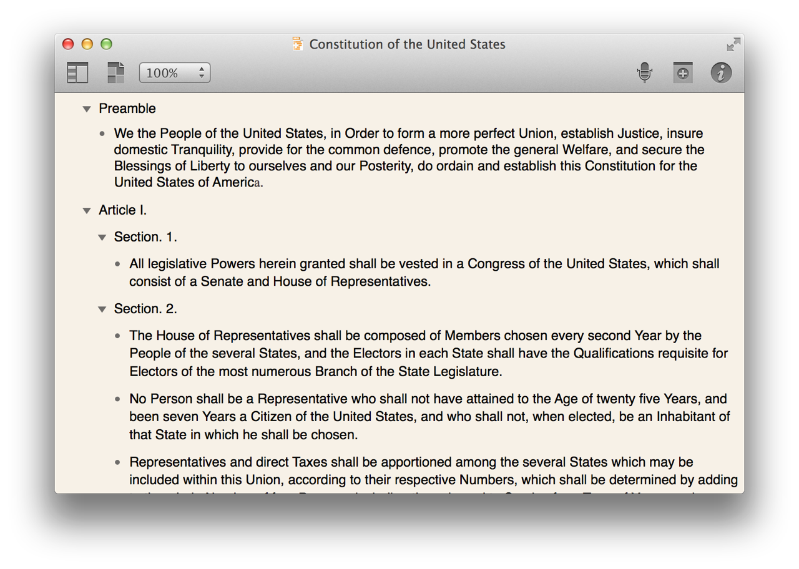
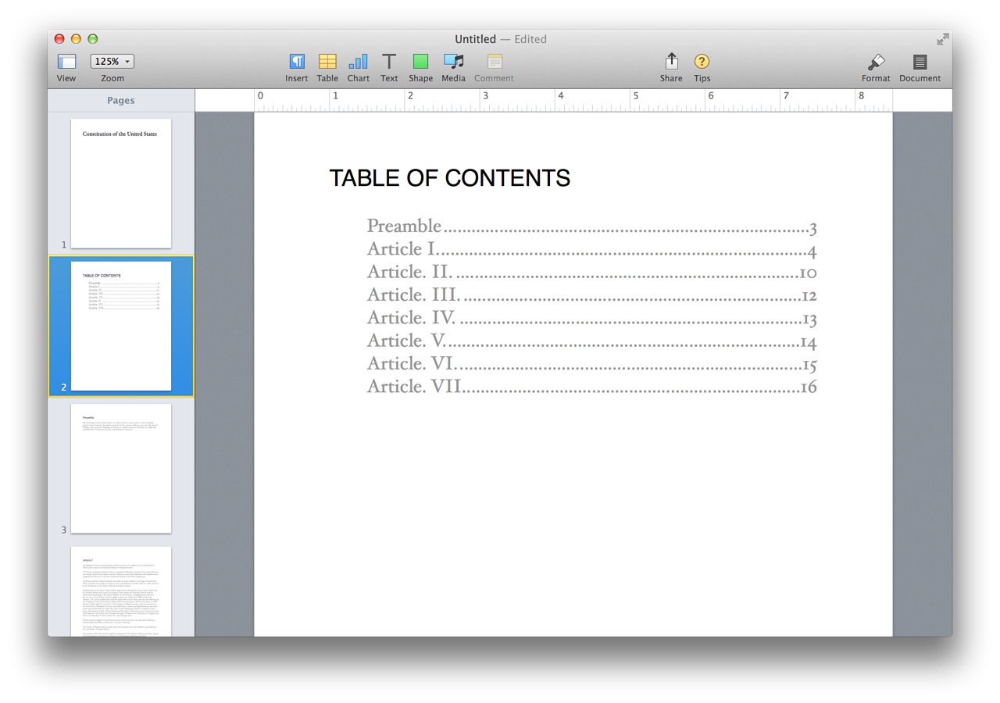

Here’s an example of AppleScript’s ability to transfer data between applications, to pour the source material into a newly created document, and to apply multiple formatting procedures to the text flow.
In this script example, the contents of an OmniOutliner outline document are transformed into a Pages word-processing document. The contents of each outline section become a new section in the Pages document. In addition, the script generates a table of contents for the new document.

(⬆ see above ) An Omni Outliner document containing the Constitution of the United States in outline format.
(⬇ see below ) The completed Pages document. In the process, the sections of the Omni Outliner document become sections in the Pages document. Optionally, the script can generate a Table of Contents. (Note: the tab leader formatting shown in the illustration is not part of the script processing)

DO THIS ►DOWNLOAD the example Omni OmniOutliner document.
propertydefaultSectionTypeFace : "Times New Roman Italic"
08
propertydefaultSectionTypeSize : 18
09
propertydefaultSectionTypeColor : "black"
10
11
propertydefaultBodyTypeFace : "Hoefler Text"
12
propertydefaultBodyTypeSize : 12
13
propertydefaultBodyTypeColor : "gray"
14
15
propertydefaultTOCTitleTypeFace : "Helvetica"
16
propertydefaultTOCTitleTypeSize : 22
17
propertydefaultTOCTitleTypeColor : "black"
18
19
propertydefaultTOCItemTypeFace : "Hoefler Text"
20
propertydefaultTOCItemTypeSize : 18
21
propertydefaultTOCItemTypeColor : "gray"
22
23
propertyuseSectionTitleForTOC : true
24
25
26
tellapplication "OmniOutliner"
27
activate
28
display dialog "This script will create a new Pages word-processing document, with each section of the frontmost OmniOutliner document becoming a new section in the Pages document." & return & return & "The name of each OmniOutliner section will be used as both the title of the newly created Pages section, and as an entry in the optionally created Table of Contents." with icon 1 buttons {"Cancel", "Include TOC", "Build"} default button 3
29
ifbutton returnedof theresultis "Include TOC" then
30
setcreateTOCtotrue
31
else
32
setcreateTOCtofalse
33
end if
34
if not (existsdocument 1) then errornumber -128
35
tell the frontdocument
36
setsourceDocumentTitleto itsname
37
set thesourceDocumentSectionNamesto thenameof everysection
38
set thesourceDocumentSectionCountto ¬
39
thecountof thesourceDocumentSectionNames
40
end tell
41
end tell
42
43
tellapplication "Pages"
44
activate
45
setthisDocumentto ¬
46
makenewdocumentwith properties ¬
47
{document template:templatedefaultTemplateName}
48
49
tellthisDocument
50
51
ifdocument bodyisfalsethen
52
display alert "INCOMPATIBLE TEMPLATE" message "The template of this document does not have an active document body text flow."
53
errornumber -128
54
end if
55
56
-- TITLE PAGE
57
tellpage 1
58
setbody texttosourceDocumentTitle
59
tellbody text
60
setfonttodefaultDocumentTitleTypeFace
61
setsizetodefaultDocumentTitleTypeSize
62
set thecolorof it todefaultDocumentTitleTypeColor
63
end tell
64
end tell
65
66
-- TOC PAGE OPTION
67
ifcreateTOCistruethen
68
makenewsection
69
setbufferIndexto 2
70
else
71
setbufferIndexto 1
72
end if
73
74
-- MAKE THE SECTIONS
75
repeat withifrom 1 to (sourceDocumentSectionCount)
Mention of third-party websites and products is for informational purposes only and constitutes neither an endorsement nor a recommendation. MACOSXAUTOMATION.COM assumes no responsibility with regard to the selection, performance or use of information or products found at third-party websites. MACOSXAUTOMATION.COM provides this only as a convenience to our users. MACOSXAUTOMATION.COM has not tested the information found on these sites and makes no representations regarding its accuracy or reliability. There are risks inherent in the use of any information or products found on the Internet, and MACOSXAUTOMATION.COM assumes no responsibility in this regard. Please understand that a third-party site is independent from MACOSXAUTOMATION.COM and that MACOSXAUTOMATION.COM has no control over the content on that website. Please contact the vendor for additional information.